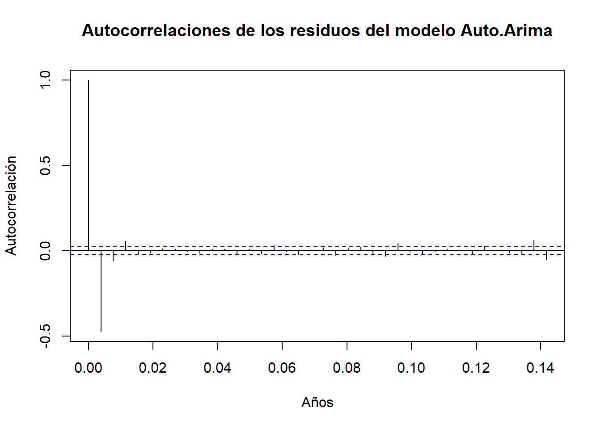
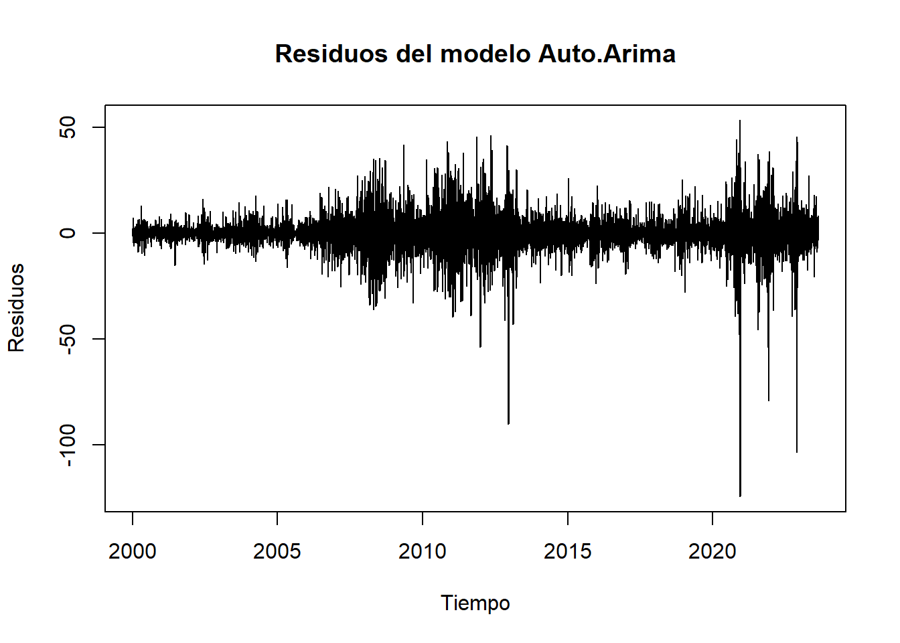

Chapter 7 Metodología Box-Jenkins
7.1 Visualizar la serie
# Gráfico de la serie
ts.plot(dif1_maiz, main = "PRECIO DEL MAIZ POR DÍA", col = "darkgreen")
# Instalar y cargar el paquete tseries si no está instalado
if (!requireNamespace("tseries", quietly = TRUE)) {
install.packages("tseries")
}
library(tseries)
#prueba de estacionariedad
print('------------------------')## [1] "------------------------"print('Prueba Estacionariedad DF Maíz')## [1] "Prueba Estacionariedad DF Maíz"adf.test(dif1_maiz, alternative = c("stationary", "explosive") )## Warning in adf.test(dif1_maiz, alternative = c("stationary", "explosive")):
## p-value smaller than printed p-value##
## Augmented Dickey-Fuller Test
##
## data: dif1_maiz
## Dickey-Fuller = -54.896, Lag order = 18, p-value = 0.01
## alternative hypothesis: stationaryTenemos un valor de p-value>0.05 no rechazamos la hipótesis nula de que la serie no sea estacionaria.
Validando cuantas veces se debe diferenciar para tener una serie estacional
ndiffs(df_maiz_filtradots1)## [1] 1Según el resultado se debe diferenciar una vez para para tener la serie estacional
7.2 Graficar ACF-PACF, Escoger los parametros
par(mfrow = c(1,1))
acf(dif1_maiz, lag.max = 36)
pacf(dif1_maiz, lag.max = 36)
7.3 Definición del modelo
Se realiza una validación del mejor modelo ARIMA predictivo con la función auto.arima().
library(forecast)
mod_arima_auto <- auto.arima(dif1_maiz)
#Mostrar el modelo seleccionado
summary(mod_arima_auto)## Series: dif1_maiz
## ARIMA(5,0,0) with zero mean
##
## Coefficients:
## ar1 ar2 ar3 ar4 ar5
## -2.2025 -2.7672 -2.3625 -1.3634 -0.4344
## s.e. 0.0115 0.0248 0.0309 0.0248 0.0115
##
## sigma^2 = 396.5: log likelihood = -27189.74
## AIC=54391.48 AICc=54391.49 BIC=54431.84
##
## Training set error measures:
## ME RMSE MAE MPE MAPE MASE ACF1
## Training set -0.005415969 19.90455 13.08986 NaN Inf 0.2004407 -0.16852977.4 Validación del modelo
7.4.1 Estacionariedad de los residuos
Residuos del modelo
plot.ts(mod_arima_auto$residuals,
main="Residuos del modelo Auto.Arima",
xlab="Tiempo",
ylab="Residuos")
7.4.2 Autocorrelación de los residuos:
acf(mod_arima_auto$residuals,
main="Autocorrelaciones de los residuos del modelo Auto.Arima",
xlab="Años",
ylab="Autocorrelación")
pacf(mod_arima_auto$residuals,
main="Autocorrelaciones Parciales de los residuos del modelo Auto.Arima",
xlab="Años",
ylab="Autocorrelación")
7.4.3 Normalidad de los residuos:
qqnorm(mod_arima_auto$residuals,main="Gráfico Q para evaluar normalidad"); qqline(mod_arima_auto$residuals)
# shapiro.test(mod_arima_auto$residuals)Dado que se tienen más de 5000 datos se opta por realizar los siguientes test de normalidad de los residuos.
#Intalar el paquete si no se encuentra instalado
if (!requireNamespace("nortest", quietly = TRUE)) {
install.packages("nortest")
}
library(nortest)
# Realizar la prueba de Anderson-Darling
ad_test_result <- ad.test(mod_arima_auto$residuals)
print(ad_test_result)##
## Anderson-Darling normality test
##
## data: mod_arima_auto$residuals
## A = 125.27, p-value < 2.2e-16# Realizar la prueba de Kolmogorov-Smirnov
ks_test_result <- ks.test(mod_arima_auto$residuals, "pnorm", mean=mean(mod_arima_auto$residuals), sd=sd(mod_arima_auto$residuals))
print(ks_test_result)##
## Asymptotic one-sample Kolmogorov-Smirnov test
##
## data: mod_arima_auto$residuals
## D = 0.09271, p-value < 2.2e-16
## alternative hypothesis: two-sidedLos test tienen p-value < 0.05 lo cual rechaza la hipotesis de que los residuos siguen una distribución normal.
7.5 Pronosticos
7.5.1 Modelo Autoarima
# Validación cruzada
# Conjunto de entrenamiento y testeo
n <- length(dif1_maiz)
train <- dif1_maiz[1:(n/2)]
test <- dif1_maiz[(n/2+1):n]
# Hacer pronósticos con el modelo ajustado
predicciones_auto <- predict(mod_arima_auto, n.ahead=length(test))
# Calcular el error de pronóstico
error_auto <- test - predicciones_auto$pred# Calcular las métricas de evaluación
mse <- mean((test - predicciones_auto$pred)^2)
rmse <- sqrt(mse)
mae <- mean(abs(test - predicciones_auto$pred))
r_squared <- 1 - sum((test - predicciones_auto$pred)^2) / sum((test - mean(test))^2)
# Crear una tabla con las métricas
evaluacion_auto <- data.frame(
MSE = mse,
RMSE = rmse,
MAE = mae,
R_squared = r_squared
)
# Mostrar la tabla
print("Métricas de evaluación del modelo ARIMA:")## [1] "Métricas de evaluación del modelo ARIMA:"print(evaluacion_auto)## MSE RMSE MAE R_squared
## 1 3694.245 60.7803 40.54329 -0.00021860747.5.2 Modelo ARIMA(1,0,8)
# Validación cruzada
# Conjunto de entrenamiento y testeo
n <- length(dif1_maiz)
train <- dif1_maiz[1:(n/2)]
test <- dif1_maiz[(n/2+1):n]
# Ajustar el modelo ARIMA en los datos de entrenamiento
modelo_arima2 <- arima(train, order=c(1, 0, 8))
# Hacer pronósticos con el modelo ajustado
predicciones <- predict(modelo_arima2, n.ahead=length(test))
# Calcular el error de pronóstico
error <- test - predicciones$pred# Calcular las métricas de evaluación
mse <- mean((test - predicciones$pred)^2)
rmse <- sqrt(mse)
mae <- mean(abs(test - predicciones$pred))
r_squared <- 1 - sum((test - predicciones$pred)^2) / sum((test - mean(test))^2)
# Crear una tabla con las métricas
evaluacion <- data.frame(
MSE = mse,
RMSE = rmse,
MAE = mae,
R_squared = r_squared
)
# Mostrar la tabla
print("Métricas de evaluación del modelo ARIMA:")## [1] "Métricas de evaluación del modelo ARIMA:"print(evaluacion)## MSE RMSE MAE R_squared
## 1 3696.175 60.79618 40.57197 -0.00074122847.6 Conclusiones
7.6.1 Evaluación de la calidad del modelo
- MSE (Mean Squared Error): La varianza promedio de los erroes de predicicón es de 58.8.
- RMSE (Root Mean Squared Error): La raíz cuadrada del MSE es de 7.7
- MAE (Mean Absolute Error): El error absoluto promedio es de 4.96
- R_squared: El R cuadrado es un valor muy cercano a cero y negativo, por consiguiente el desempeño del modelo no es el adecuado.
7.6.2 Analisis de los residuos
Las pruebas de normalidad de los residuos (Anderson-Darling y Kolmogorov-Smirnov) tienen p-valores extremadamente bajos (< 2.2e-16), lo que indica que los residuos no siguen una distribución normal.
Esto lo que indica es que el modelo Auto.arima no está capturando toda la variabilidad de los datos.